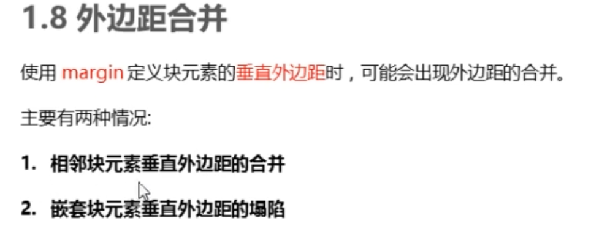

盒子模型包括：边框border, 外边距margin, 内边距padding, 内容content
排名
关键词
趋势
进入搜索
最近七天
1
读书
全民
书库
未看书
2
健身
男女
老少
800米
3
旅游
放松
出国
宅
4
吃饭
每天
干饭
按时
1.外边距margin，控制盒子之间的距离
2.块级盒子水平居中必须满足盒子指定宽度，左右外边距设置为auto
1.行内块元素居中对齐
2.添加text-align:center

嵌套边框父子合并。
border-radius可以设置4个（从左上开始顺时针）
，2个（左上右下一个对角，右上左下一个对角），
1个数值（4个角相等）
设置个盒子阴影。


 读书 健身 旅游 吃饭
读书 健身 旅游 吃饭